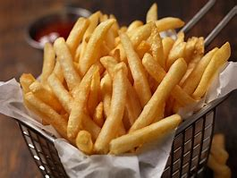

Best Fries Ever

Description
This delicious french fry recipe will
have you coming back for more. You will
never go back to fast food fries again.
Ingredients
- 3 Potatoes
- Peanut Oil
- salt (to tastes)
Steps
- Peel Potatoes
- Cut to into even rectangles
- soak in water for 30mins and up to 4hrs
- with 10 mins left prepare oil for frying
- heat oil to 325 degrees F.
- Dry off potatoes
- fry in oil for 5 to 7 mins or untill
light brown and allow to drain and cool
- Once all are par cooked raise
oil temp to 350 degrees F
- Cook potatoes again for 2 mins or untill
golden brown.
- Toss with salt while still hot then allow
to cool and enjoy.